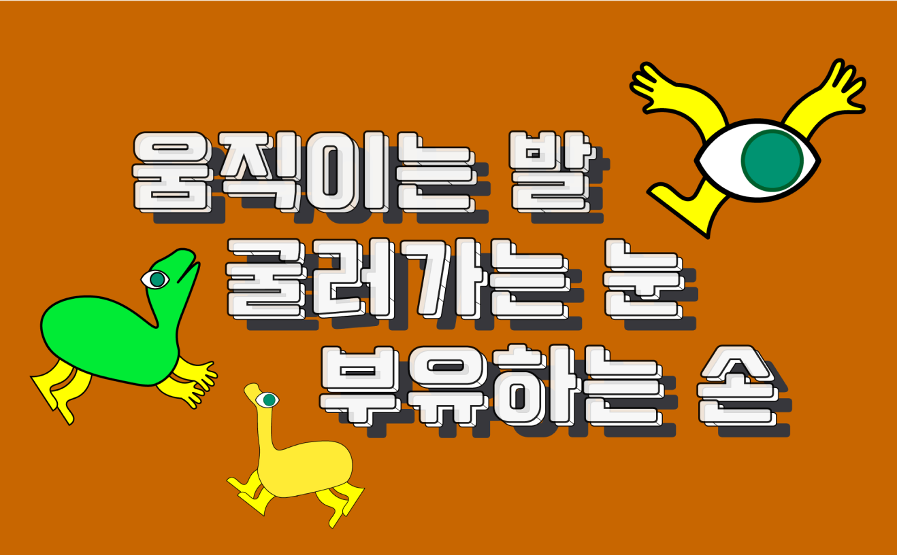
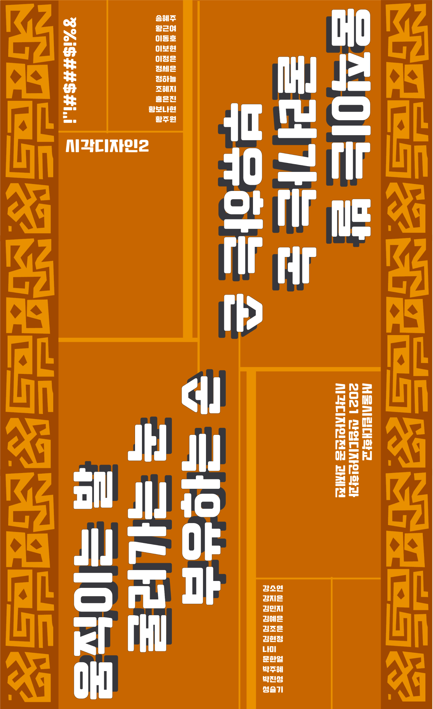

Project
Contact
khj317888@gmail.com
Designer
Group Identity
김현정
움직이는 발, 굴러가는 눈, 부유하는 손
Category
-
‘제목의 신체를 통해 모든 사람은 자신만의 도형을 그리고, 거기에 발눈손을 붙여 캐릭터를 갖는다.
아프리카 설화인 ‘머리, 몸통, 다리’에서 떠올린 테마로 전통적인 문양을 활용한 현수막을 디자인했다.
 